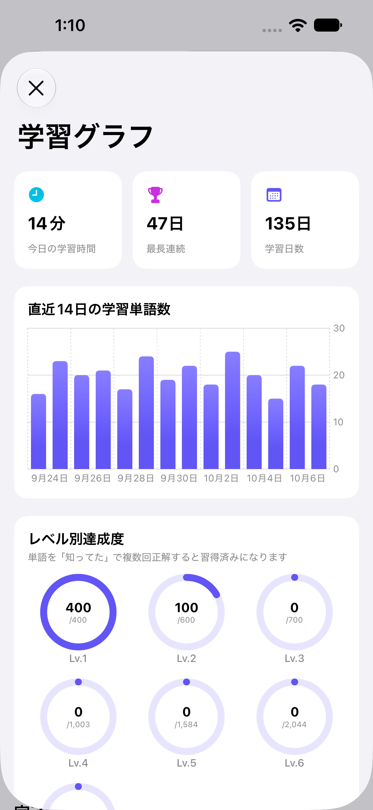
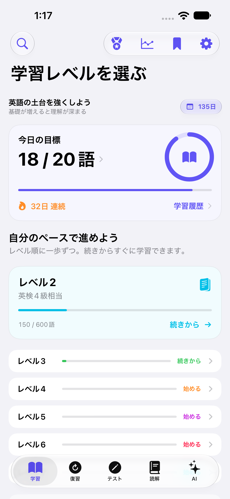
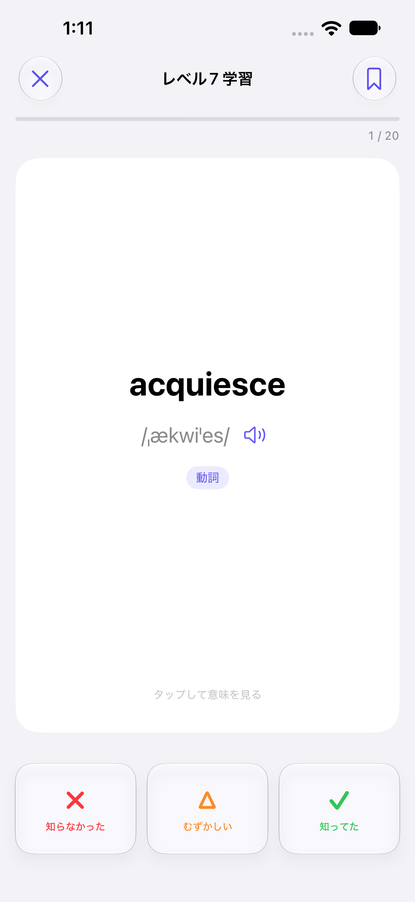
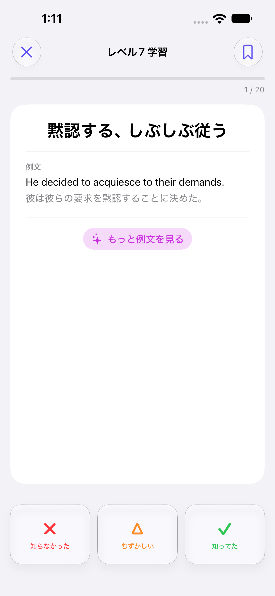
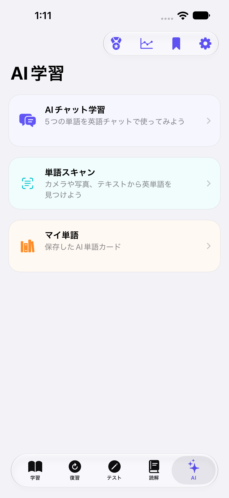
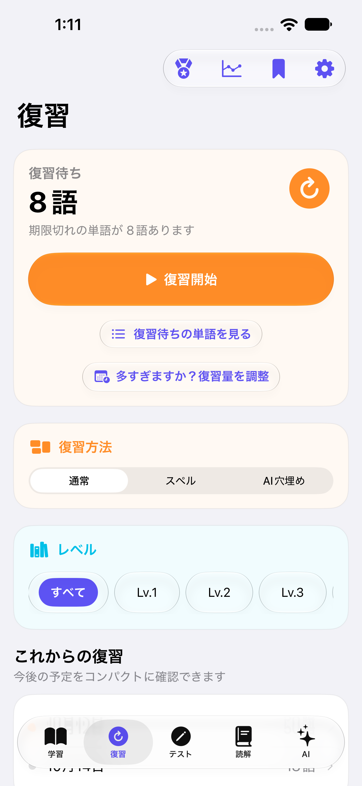
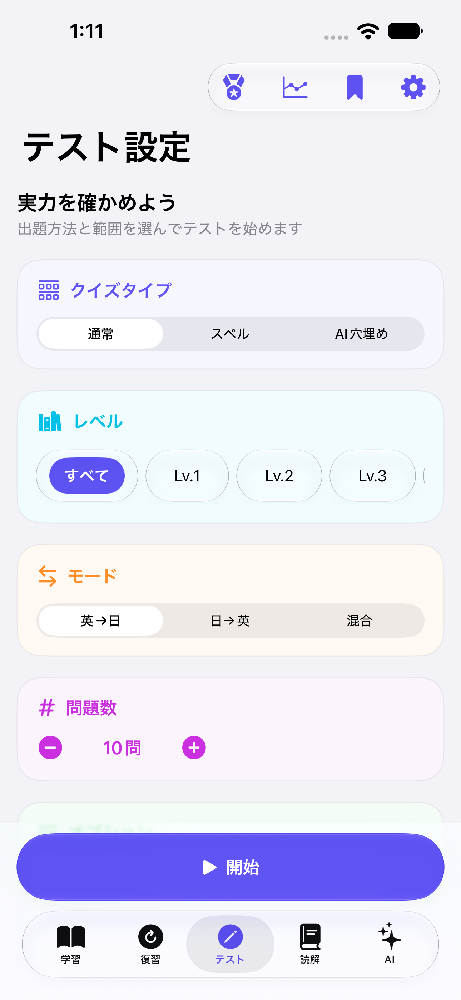
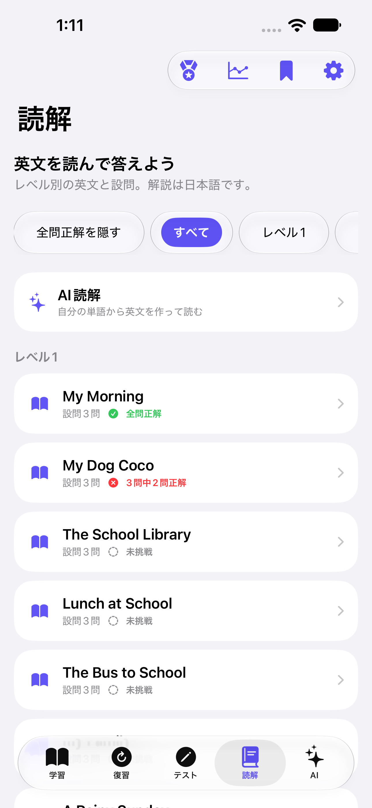

7,000語・7レベル
中1〜高3・上級の7段階で、英検・受験に必要な語彙を網羅。すべての単語に日本語の意味・発音記号・品詞・例文がついています。
共通テスト・TOEIC 7000語 AI英会話と長文読解
概要
中1〜高3・上級の7段階で、英検・受験に必要な語彙を網羅。すべての単語に日本語の意味・発音記号・品詞・例文がついています。
科学的なSM-2アルゴリズムが最適な復習タイミングを自動計算。長期記憶への定着をサポートします。
選んだ5つの単語を英語チャットで実際に使い、教科書にカメラを向けて単語カードを作り、設問つきの英文70本で読解力を鍛えます。AI機能にはApple Intelligence対応デバイスが必要ですが、フラッシュカード、テスト、スペル、読解はなくても使えます。
スクリーンショット







